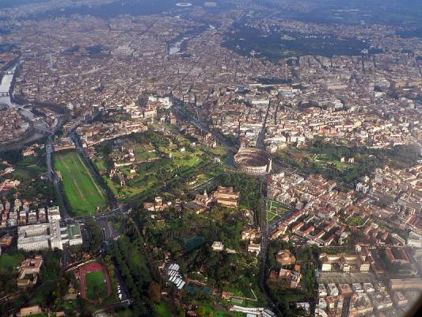

Location
Rome is in the Lazio region of central Italy on the Tiber (Italian: Tevere) river. The original settlement developed on hills that faced onto a ford beside the Tiber Island, the only natural ford of the river in this area. The Rome of the Kings was built on seven hills: the Aventine Hill, the Caelian Hill, the Capitoline Hill, the Esquiline Hill, the Palatine Hill, the Quirinal Hill, and the Viminal Hill. Modern Rome is also crossed by another river, the Aniene, which flows into the Tiber north of the historic centre.
Although the city centre is about 24 kilometres (15 mi) inland from the Tyrrhenian Sea, the city territory extends to the shore, where the south-western district of Ostia is located. The altitude of the central part of Rome ranges from 13 metres (43 ft) above sea level (at the base of the Pantheon) to 139 metres (456 ft) above sea level (the peak of Monte Mario).[70] The Comune of Rome covers an overall area of about 1,285 square kilometres (496 sq mi), including many green areas.
Topography
Throughout the history of Rome, the urban limits of the city were considered to be the area within the city's walls. Originally, these consisted of the Servian Wall, which was built twelve years after the Gaulish sack of the city in 390 BC. This contained most of the Esquiline and Caelian hills, as well as the whole of the other five. Rome outgrew the Servian Wall, but no more walls were constructed until almost 700 years later, when, in 270 AD, Emperor Aurelian began building the Aurelian Walls. These were almost 19 kilometres (12 mi) long, and were still the walls the troops of the Kingdom of Italy had to breach to enter the city in 1870. The city's urban area is cut in two by its ring-road, the Grande Raccordo Anulare ("GRA"), finished in 1962, which circles the city centre at a distance of about 10 km (6 mi). Although when the ring was completed most part of the inhabited area lay inside it (one of the few exceptions was the former village of Ostia, which lies along the Tyrrhenian coast), in the meantime quarters have been built which extend up to 20 km (12 mi) beyond it.
The comune covers an area roughly three times the total area within the Raccordo and is comparable in area to the entire metropolitan cities of Milan and Naples, and to an area six times the size of the territory of these cities. It also includes considerable areas of abandoned marsh land which is suitable neither for agriculture nor for urban development.
As a consequence, the density of the comune is not that high, its territory being divided between highly urbanised areas and areas designated as parks, nature reserves, and for agricultural use.